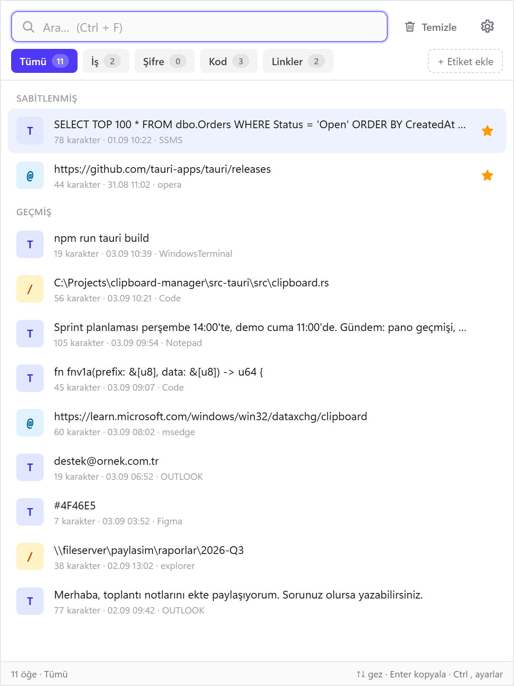
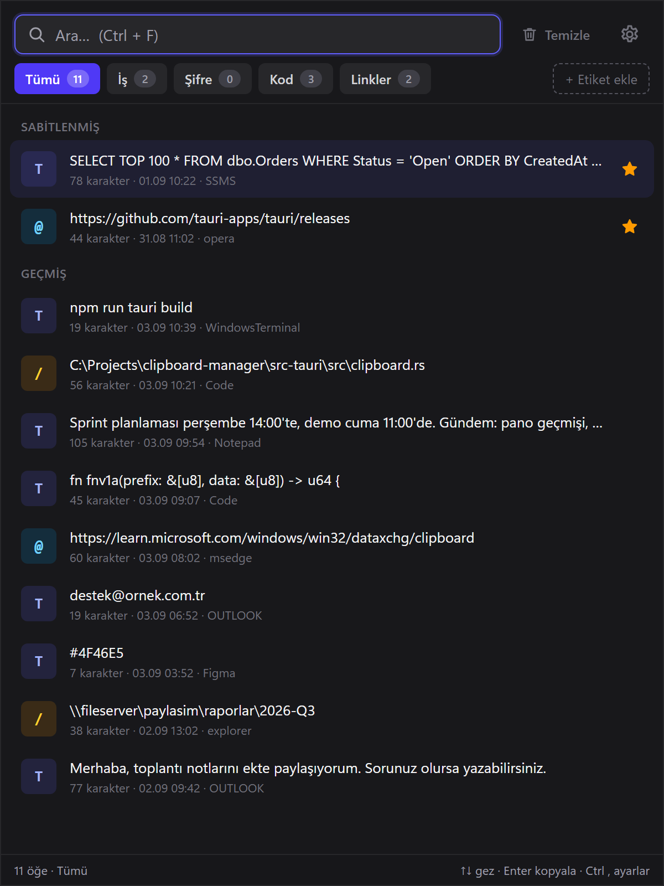
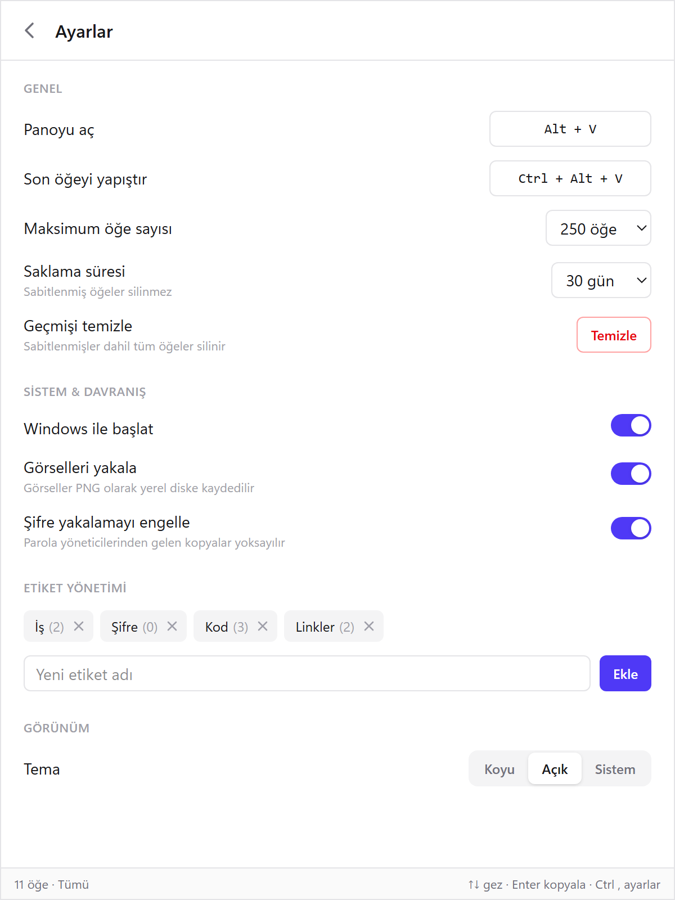
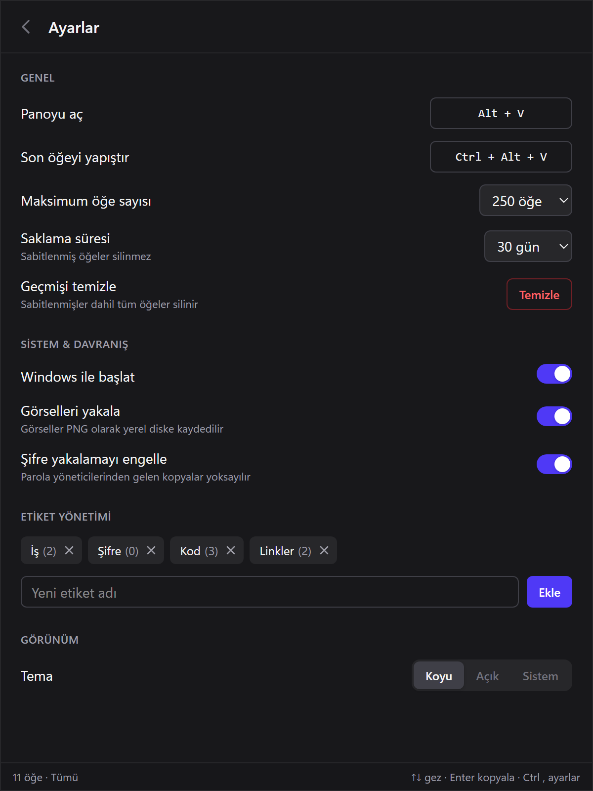

Windows 10 ve 11 için pano geçmişi
Kopyaladığın her şey iki tuş uzağında.
Geçmişi imlecin yanında aç, bir öğeye tıkla, çalıştığın yere yapışsın. Arka planda neredeyse hiç kaynak harcamaz.


Üç adımda kullanım
Yeni bir alışkanlık edinmeniz gerekmiyor. Her zamanki gibi kopyalayın, gerisini uygulama halleder.
-
Her zamanki gibi kopyala
Ctrl C ile neyi kopyalarsanız (metin, link, dosya yolu, görsel) kaynak uygulamasıyla birlikte kaydedilir.
-
Alt V ile aç
Pencere farenin olduğu yerde açılır. Yazmaya başlayınca liste anında süzülür.
-
Tıkla, yapışsın
Seçtiğiniz öğe, pencereyi açmadan önce çalıştığınız uygulamada imlecin olduğu yere yapıştırılır.
Küçük, hızlı, sizin bilgisayarınızda
Rust ve Tauri ile yazıldı. Pano değişikliklerini Windows'un kendi bildirimiyle dinler, saniyede bir kontrol eden bir döngü yoktur.
Sabitle
Sık kullandığınız metinleri yıldızlayın. En üstte ayrı bir grupta durur, otomatik temizlik onlara dokunmaz.
Etiketler
"İş", "Kod", "Linkler" gibi etiketler oluşturun. Her etiketin yanında kaç öğe olduğu görünür.
Parolaları kaydetmez
KeePass, 1Password, Bitwarden gibi parola yöneticilerinden gelen kopyalar geçmişe yazılmaz.
Türü ve kaynağı belli
Metin, link, dosya yolu ve görsel ayrı işaretlenir. Karakter sayısı, saat ve kopyalandığı uygulama altında yazar.
Görseller de dahil
Ekran görüntüleri ve kopyalanan resimler PNG olarak saklanır. İstemezseniz ayarlardan kapatabilirsiniz.
Veriler yerel
Geçmiş, bilgisayarınızdaki bir SQLite dosyasında tutulur. Hesap yok, bulut yok, internete veri gitmez.
Ekran görüntüleri
Koyu, açık veya Windows temasını izleyen görünüm. Bu sayfadaki görseller de cihazınızın temasına göre değişir.


Klavyeden ayrılmadan
Global kısayollar her uygulamada çalışır ve ayarlardan değiştirilebilir.
| Alt Vglobal | Geçmişi imlecin yanında aç veya kapat |
| Ctrl Alt Vglobal | Son kopyalananı biçimsiz düz metin olarak yapıştır |
| Tıklama | Kopyala ve önceki uygulamaya yapıştır |
| ↑ ↓ Enter | Listede gez, seçileni panoya kopyala |
| Shift Enter | Kopyala ve yapıştır |
| Ctrl F | Aramaya geç |
| Ctrl Shift Del | Geçmişi temizle (sabitlenmişler kalır) |
| Ctrl , | Ayarlar |
| Sağ tık | Etiket ata, sabitle, sil |
İndir ve kur
Kurulum yönetici izni istemez ve bir dakikadan kısa sürer. Kurulumdan sonra uygulama sistem tepsisinde çalışır.
- Sistem
- Windows 10 veya 11, 64-bit
- Gereksinim
- Microsoft Edge WebView2. Windows 11'de hazır gelir, yoksa kurulum indirir.
- Veriler
%APPDATA%\tr.bfn.clipboard- Portable
- Kurulum gerektirmez, tek exe olarak çalışır. Ayarlar ve geçmiş yine bilgisayarda saklanır.
- İlk açılış
- "Windows bilgisayarınızı korudu" uyarısı çıkarsa Ek bilgi ve ardından Yine de çalıştır seçin.